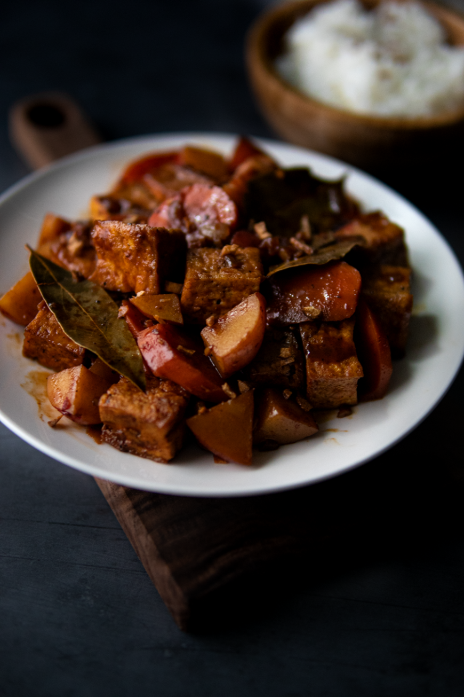

<!DOCTYPE html>
<html lang="en">
<head>
    <meta charset="UTF-8">
    <meta http-equiv="X-UA-Compatible" content="IE=edge">
    <meta name="viewport" content="width=device-width, initial-scale=1.0">
    <title>Adobong sa Achuete</title>
    <link rel="stylesheet" href="../styles.css">
</html>
    <body>
        <div class-="content">
         <div><a href="../index.html"class="btn">Bahay(home)</a></div>
            <h1>Adobong sa Achuete</h1>
            <div class="section">
                
            </div>
            <h3>Description</h3>
            <div class="section">
                <p>
                    In Philippine cuisine, adobo is often made with any source of protein marinaded in vinegar, 
                    soy, bay leaf, garlic, and peppercorn. The protein is usually seared to caramelize in color, 
                    then braised to simmer in the sauce. adobong cavite, has a red-orange hue. The color comes from 
                    the use of annatto powder (or achuete), or powder that derives from annatto seeds, a natural food dye from achiote trees.
                </p>
            </div>
            <h3>Ingredients:</h3>
            <div class="section">
                <ul>
                    <li>2 tbsp cooking oil (such as vegetable or canola)</li>
                    <li>2 tsp achuete or annato powder</li>
                    <li>½ cup low sodium soy sauce (or tamari for gluten free)</li>
                    <li>⅓ cup cane vinegar</li>
                    <li>¼ cup vegetable broth</li>
                    <li>½ tbsp palm sugar</li>
                    <li>1 block (14oz) extra-firm tofu pressed & patted dry</li>
                    <li>6 cloves garlic minced</li>
                    <li>¼ small (¼ cup) yellow onions diced</li>
                    <li>⅓ cup red skinned potatoes diced</li>
                    <li>2-3 pieces dried bay leaves</li>
                    <li>2 tsp whole peppercorn</li>
                    <li>salt & pepper to taste</li>
                    <li>½ tbsp oil</li>
                </ul>
            </div>
            <h3>Steps:</h3>
            <div class="section">
                <ol>
                    <li>Using a sauce bowl, whisk together achuete powder and oil until lumps are gone. Set aside for later use.</li>
                    <li>Using a small mixing bowl, pour liquid ingredients such as the soy sauce, vinegar, vegetable broth, and sugar. Whisk together until well combined. Set aside.</li>
                    <li>Preheat stovetop and sauté pan to medium heat.</li>
                    <li>Pat dry tofu and make sure to press as much excess liquid as you can. Dice into bite sized cubes. Season with a pinch of salt & pepper on each side.</li>
                    <li>Once the pan is fully heated, coat with ½ a tablespoon of oil. Pan fry tofu on each side until it is golden brown. You don't have to make it super crispy, just enough to give it color.</li>
                    <li>Remove tofu from the pan. Then, using the achuete oil, coat the pan until it is heated.</li>
                    <li>Saute garlic into the achuete oil until fragrant. Then add the onions, carrots, bay leaves, and potatoes. Stir then let it sit for at least 6-8 minutes or until potatoes have softened, stirring it in between occasionally.</li>
                    <li>Toss the tofu back into the mix. Along with the black peppercorn. Season with a pinch of salt. Stir and let it sit for another 4-5 minutes turning the heat down to medium low. Gradually add half of the broth to simmer.</li>
                    <li>Allow the ingredients to simmer in broth until it slightly reduces and tofu has absorbed some of the liquids. Stir occasionally. Turn the heat to low and add the remaining broth. Let it simmer, once more, with the lid covered for about 4-6 minutes or when potatoes & carrots have slightly softened.</li>
                    <li>Turn off heat. Top with garlic crisps (optional)</li>
                </ol>
            </div>
        </div>
    </body>
</html>